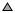

Hiking and walking tracks
- Hiking path of unknown difficulty
- Footway of unknown difficulty
-
Northcliffe
Piara Waters
- Locality, suburb
-
 Mount Chudalup
- Mountain peak
-
Clinton Hut
Pompolona Hut
- Alpine hut: public or permissive, private or club members only, with a winter room
-
Pakituhi Hut
Timaru Hut
- Wilderness hut: public or permissive, private or club members only